A retrospective on Lamma Island
Hong Kong day trip - February 27th, 2025
The tensions of two siblings, momentarily diffused by a dying matriarch. Deeply flawed; occluded by grief and deceived by grievances.
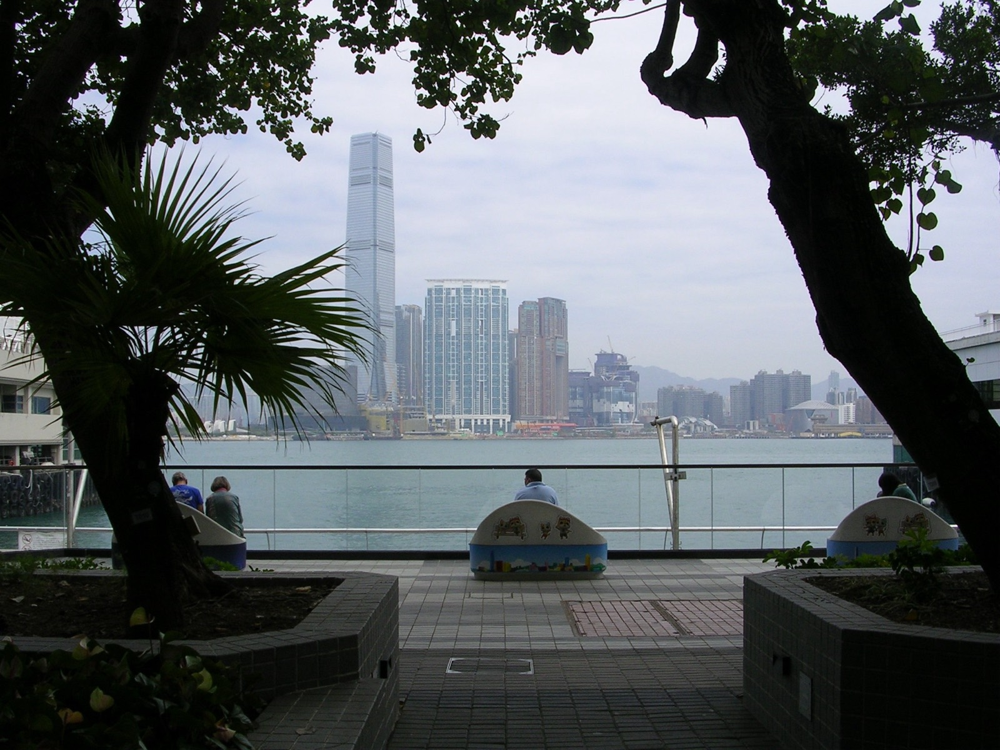
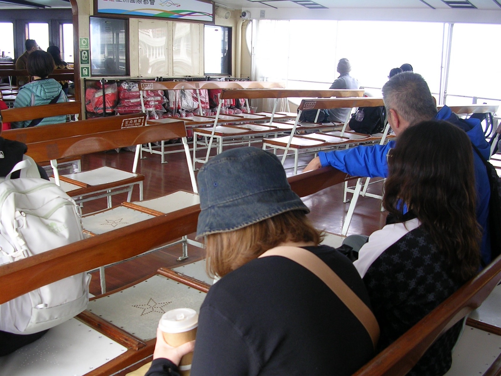
03-05.4 | Depravity: monotony, overconsumption, conformity
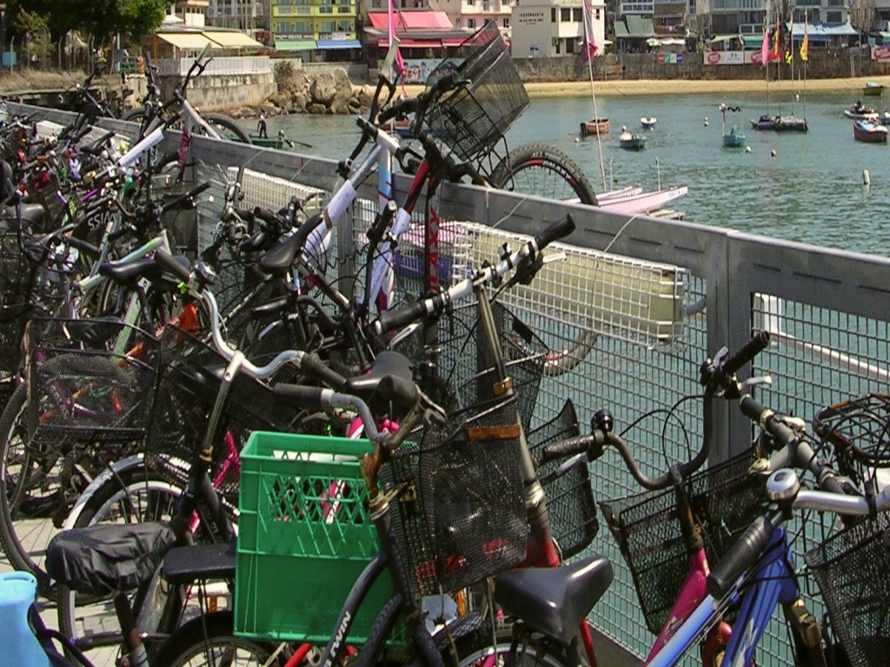
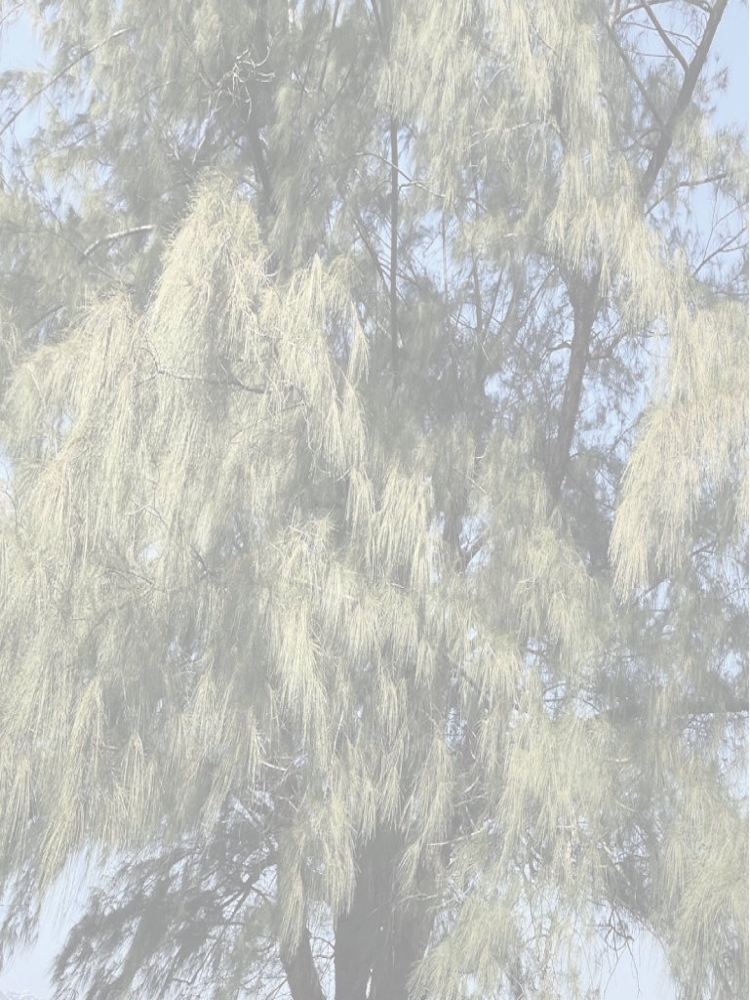
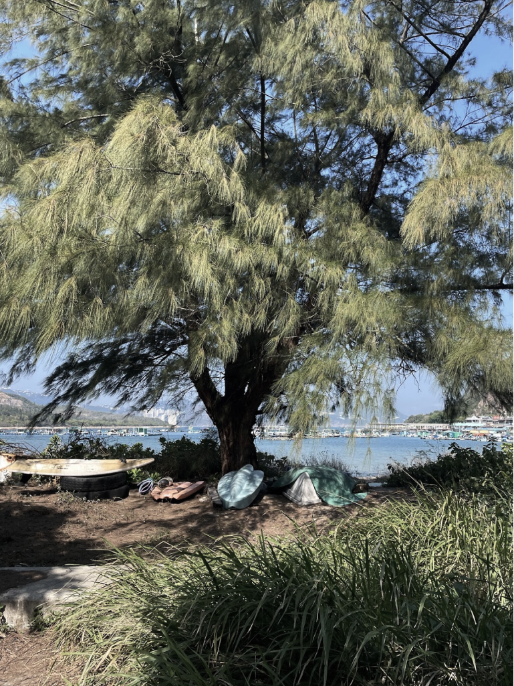
06 | The willow tree: staunch yet playful in display
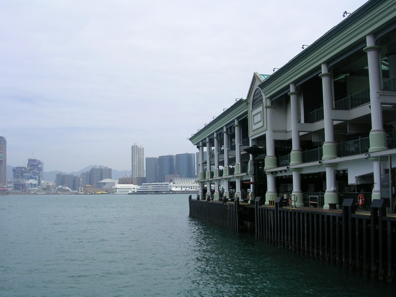
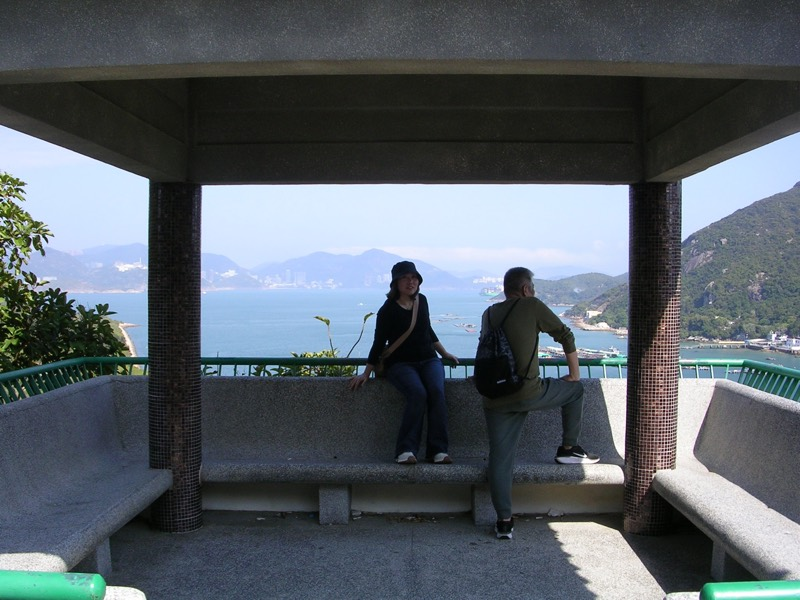
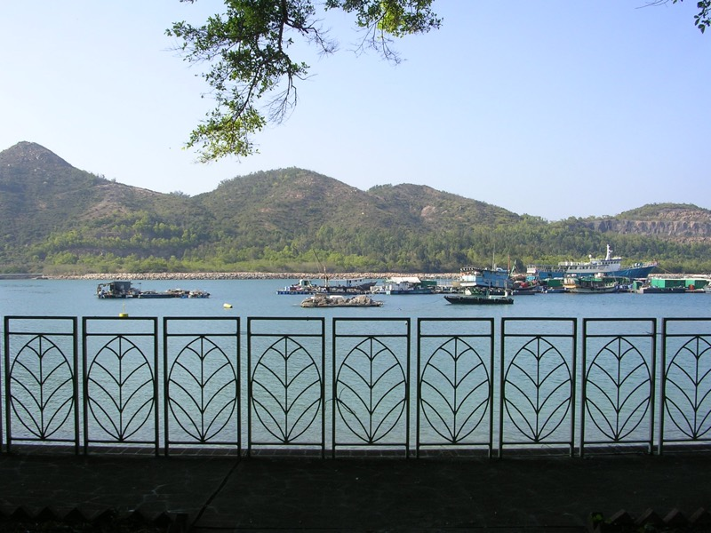
07-09 | A kaleidoscope of repeated forms, structures and behaviors (hover)
010 | Consolation in a temple
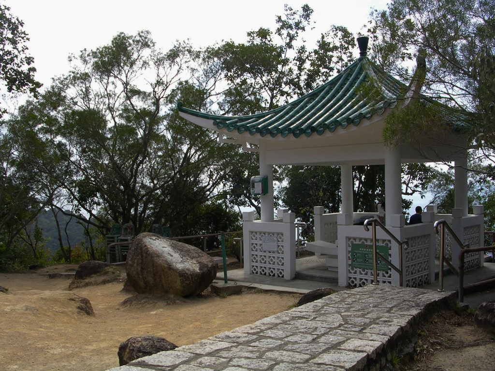
011 | Desolation in a village
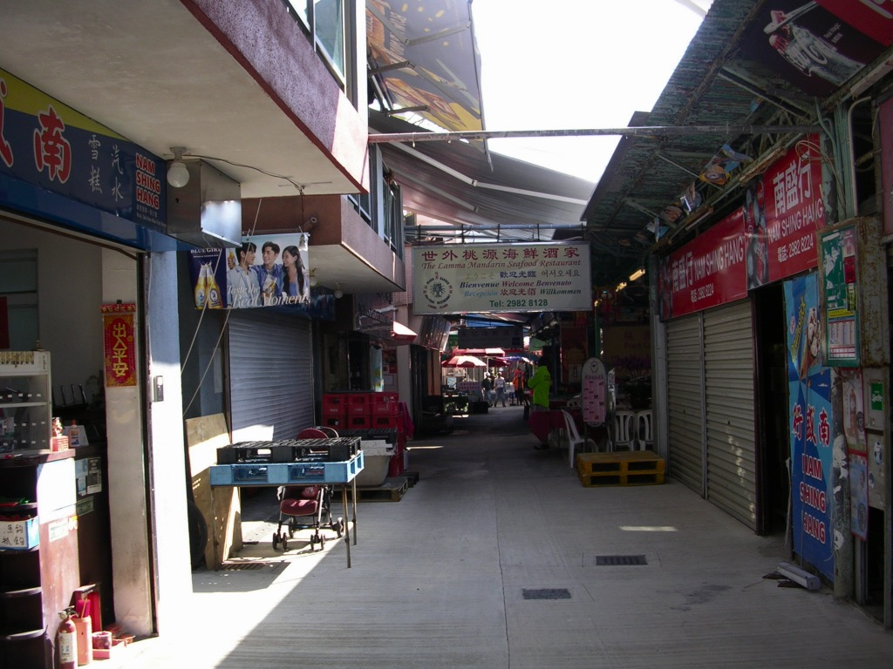
012-014 | Passersby: The fisherman, the woman and the dog superimposed.
May we find each other despite our rancor.
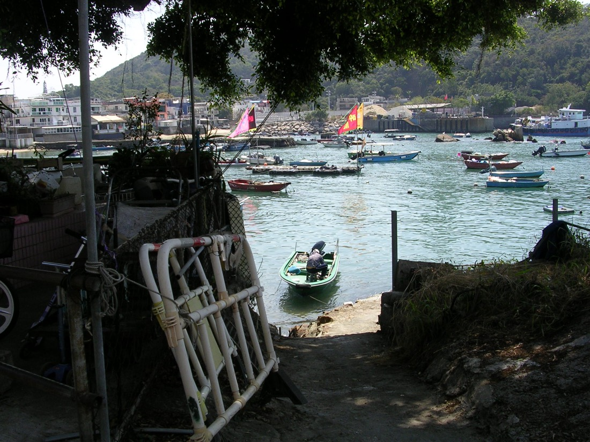
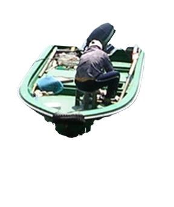
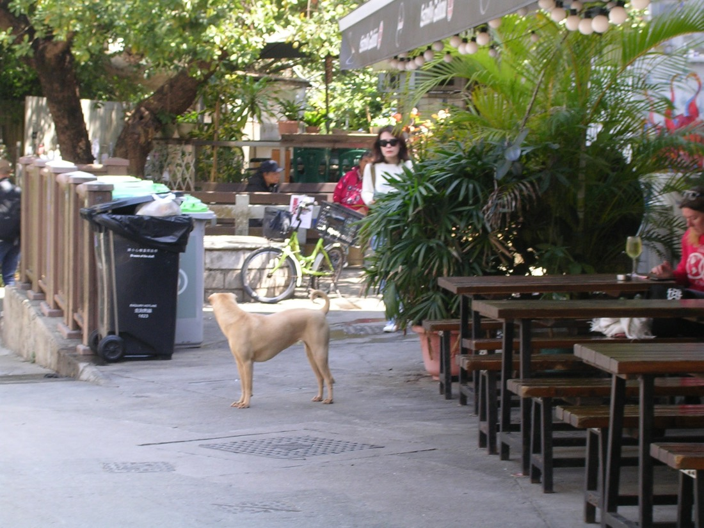
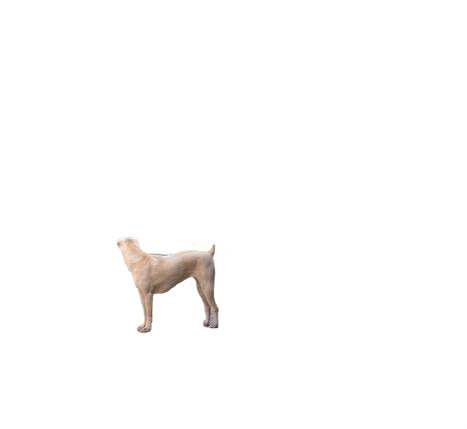
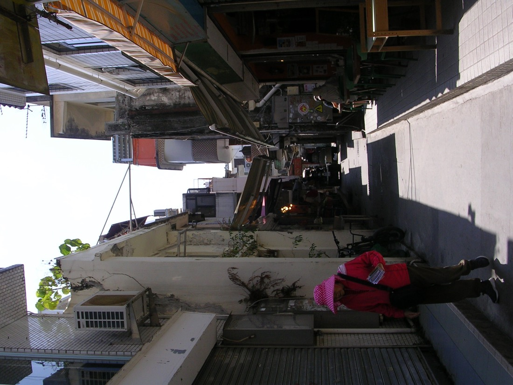
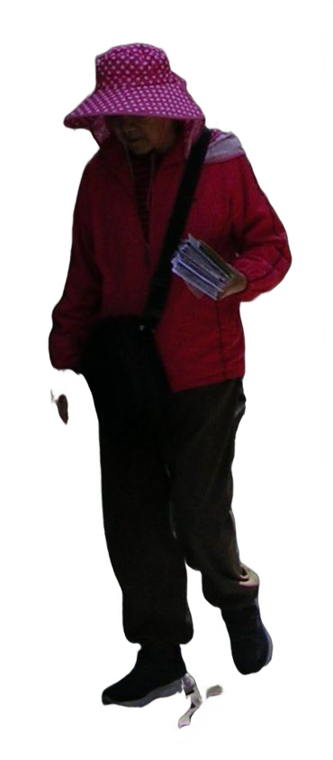